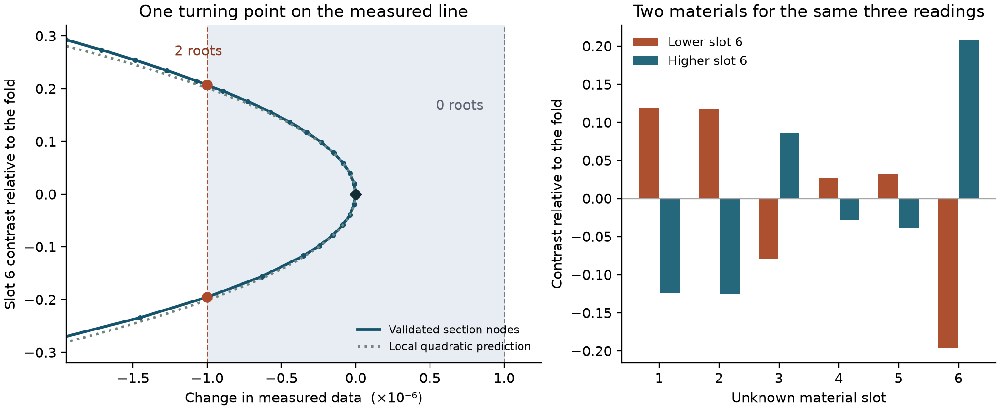
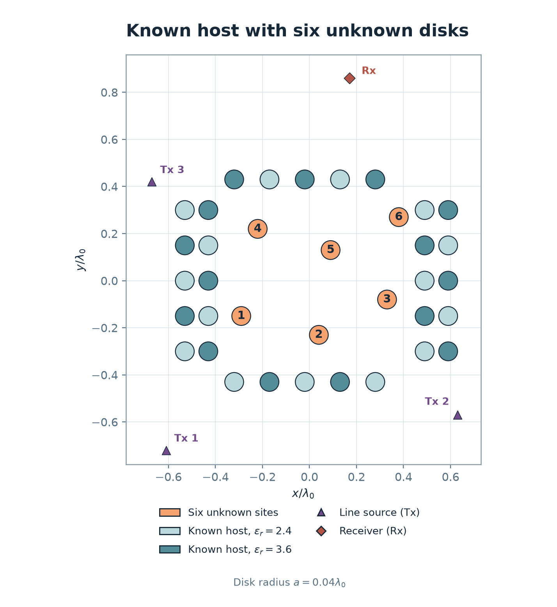
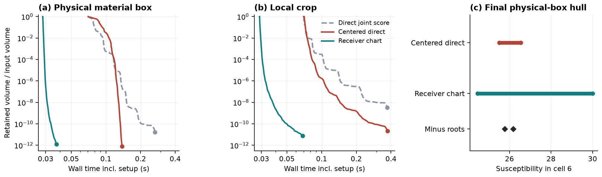

正演稳定时，六个材料为什么会有两个解
三个发射位置、一个接收器，给六个待标定材料提供六个实读数。计算每份材料的电磁响应都很稳定，同样的读数却对应两份不同的材料。把读数沿一个方向移动约百万分之二，两个解合并，随后消失。
沿这一整条线，解数只变一次
下面左图的每个点都是经完整方程验证的材料。任取一个横坐标，竖着看曲线有几个交点，就是这份读数有几种合法材料解释。右图给出负侧同一读数下，六个位置分别可以怎样变化。

| 同一份读数的两个解 | 槽 1 | 槽 2 | 槽 3 | 槽 4 | 槽 5 | 槽 6 |
|---|---|---|---|---|---|---|
| 槽 6 较低 | 19.121 | 7.738 | 4.187 | 2.584 | 19.330 | 25.771 |
| 槽 6 较高 | 18.878 | 7.495 | 4.353 | 2.530 | 19.260 | 26.174 |
两组材料的均方根距离为 0.22922。对这条记录只报一份材料，无论用哪种算法，两种解释中至少有一种的均方根误差达到 0.11461。允许复读数有 1.19209×10⁻⁶ 的联合误差后，两根之间还存在一条沿途始终符合观测的材料路径。
怎样知道没有漏掉第三个材料
在两份端点读数上，商代数和成熟同伦各找齐 20 个复候选。负侧是 16 个非共轭、2 个材料超界和 2 个合法；正侧是 18 个非共轭、2 个超界和 0 个合法。每个候选都通过了带宿主计算误差的独立核验。
两个端点之间，用第六个材料的变化量接出 55 段曲线，证明整段曲率同号。再对整个材料盒留下的 222 个小盒逐一比对。1,306 处相交均证明，同一个槽 6 数值不能藏有曲线外的另一份材料。因此 2 → 1 → 0 对整个材料范围、整条指定观测线成立。误差球其他方向上的完整拓扑仍未知。
为什么能排除正演共振
几何中有 36 个电磁状态。外围 30 个圆盘的材料已知，六个内部槽位分别取 0.5 到 30 的实对比度。圆盘间的传播采用二维出射 Hankel 核，三次照射每次都解完整的多次散射。去掉外围材料，接收响应改变 0.07813。这个已知背景确实改变了标定条件。

完整正演矩阵在折点的最小奇异值 大于 0.26124。把误差球中可能的材料全部算进去，仍然 大于 0.25260。六个接收因子在折点也都非零。保持同一宿主和收发器，只保留材料的一阶响应，六个参数可唯一回读；允许每个槽位自身非线性、关掉不同槽位间的反馈，临界材料处也恢复了满秩。完整耦合通过有限接收使两个材料变化相互抵消。
出射 Green 与材料折叠怎样联系起来
出射 Green 矩阵的 Hermitian 虚部是全角辐射功率的 Gram 矩阵。对于这里的等半径圆盘，它严格正定。消去任意已知实宿主，这一性质仍保留。
再把满足旧读数的接收响应写成 w = w₀ + cN。六个材料是实数，要求每个 wᵢ 都与 vᵢ = (R + wH)ᵢ 同相或反相，得到六个精确二次方程。非节点的合法图表中，它们的 Jacobian 与物理材料 Jacobian 同时奇异。
折点沿临界材料方向的位移与噪声的平方根成比例。10⁻⁶ 的读数扰动给出 0.28031 的二阶预测，实际两根投影为 −0.27254、+0.28894。
算得快和排得干净，哪种方法占优
同一台 Apple M4，用直接材料集合反演和 15 个四槽位余子式处理同一个观测误差球。每个保留下来的小盒都代表还有可能的材料。先比较两者留下同等体积需要多久，再比较细分到同一深度谁留下得更少。
| 同一个六维材料域 | 直接材料法 | 接收余子式 |
|---|---|---|
| 留下相同体积，含判据准备 | 0.1237 秒 | 0.0298 秒 |
| 再计入共用物理准备和上游认证 | 0.2073 秒 | 0.1134 秒 |
| 相同深度下保留的小盒数 | 222 | 345 |
| 这些盒中槽 6 的可能范围 | [25.506, 26.543] | [24.469, 30.000] |
在表中相同体积这一项，两者都留下原盒的 9.984×10⁻⁷。余子式适合快速排除；直接法同时要求三个复读数共用一份噪声，在全域最后留下的材料范围更紧。我们证出一小盒错误材料，它通过全部 15 个逐项检验，每项分数都低于 0.734；合起来检查所有读数，整盒分数超过 1.1676，许可上限只有 1。

论文可以主张什么
值得按 Inverse Problems 的理论与计算论文投稿。 本例把原来两个读数点的证据，推进到了整条观测线、全材料盒和整个噪声可行集的正演余量。直接材料法和成熟同伦在证明中都起了关键作用。通用成像加速仍缺乏证据。
已有文献给出了 Helmholtz 反问题多项式化、传递矩阵、商代数求根和一般折叠理论。这里可核查的新证据来自一个明确的介质宿主。它采用圆盘内常量电流的模拟，尚未定量包住从离散到连续圆柱的误差。R7 的连续体抵消定理、R14 的有限功率频带下界各有自己的几何和观测假设。
六篇关键先例的命题对照 · 完整中文报告 · 复算方法